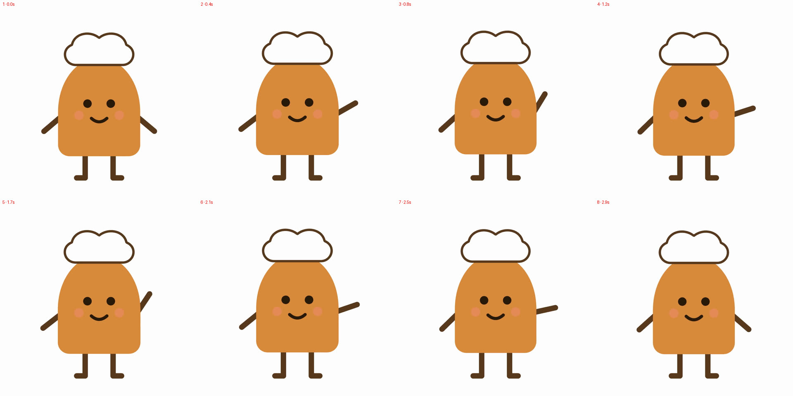

img2threejs/img2threejs
Animation test, 2026-11-18 · Characters, rigging & 3D · driven by Claude Code (Claude Opus 5.5) in a throwaway sandbox
The brief: Make the bread mascot wave: the right arm rises and waves twice, the body bobs, the eyes blink once, and it ends where it started. Full brief →
What was checked
- ✓ the mascot
- ✓ right arm waves
- ✓ body bobs
- ✓ blinks
- ✓ ends in the start pose
Checked by hand on the full recording: Eyes close at frames 44-46 (about 1.5 s).
The recording: 1080 x 1080, 30.0 fps, 3.0 s. Judge (gpt-6-astra, 8 frames): follows the brief 4/5, looks 5/5.
Time 2.4 min (installing the tool included) · 20 turns · $0.69 at API prices · files: morning-loaf-threejs/bundle.js, morning-loaf-threejs/index.html, morning-loaf-threejs/object-sculpt-spec.json, morning-loaf-threejs/render-frame0.png, morning-loaf-threejs/src/createMorningLoafModel.js, morning-loaf-threejs/src/main.js, preview.mp4
The 8 frames the judge saw

The agent's last words
af-threejs/object-sculpt-spec.json` — the tool's spec for the mascot - `morning-loaf-threejs/render-frame0.png` — the first frame, for comparing with the original DELIVERABLE: /home/runner/work/output/morning-loaf-threejs/index.html, /home/runner/work/output/morning-loaf-threejs/bundle.js, /home/runner/work/output/morning-loaf-threejs/src/createMorningLoafModel.js, /home/runner/work/output/morning-loaf-threejs/src/main.js, /home/runner/work/output/morning-loaf-threejs/object-sculpt-spec.json, /home/runner/work/output/morning-loaf-threejs/render-frame0.png, /home/runner/work/output/preview.mp4